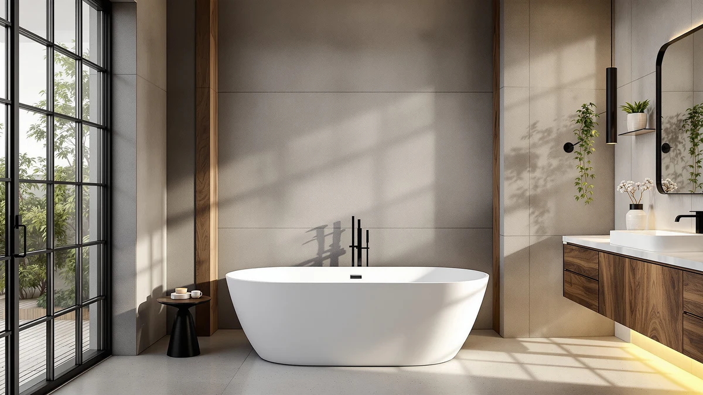

WOODBRIDGE 54" Acrylic Freestanding Review (2026): Worth It?
Prices and picks verified as of October 2026. Independent, reader-supported reviews.


Quick Answer
This woodbridge 54" acrylic freestanding review points to the WOODBRIDGE 54" Acrylic Freestanding Bathtub as the pick for bathrooms that can't fit a longer soaking tub, even though it costs a few dollars more than the three larger alternatives compared here. If floor space isn't tight, the GarveeLife, LarWorks, and SYLONWILL tubs below add 5 to 13 inches of length for about the same price.
Our pick: WOODBRIDGE 54" Acrylic Freestanding Bathtub, priced at $749.00 Check Price on Amazon
Bottom line: our top pick is the WOODBRIDGE 54" Acrylic Freestanding Bathtub Contemporary at $804.
Things to Know Before You Buy
- The WOODBRIDGE 54" Acrylic Freestanding Bathtub measures 54 inches long, the shortest of the four tubs covered in this woodbridge 54" acrylic freestanding review.
- Prices across all four tubs sit within $10 of each other, from $739.00 to $749.00, so length and brand matter more than budget here.
- The three alternatives, from GarveeLife, LarWorks, and SYLONWILL, measure 59 and 67 inches, so you get more room to stretch out if your bathroom allows it.
- The WOODBRIDGE listing includes five product images, the main photo plus four additional angles, more visual reference than a single pick-card photo typically provides.
- None of the four listings referenced here publish a customer rating or review count, so this review relies on published pricing, size, and listing detail rather than star ratings.
This woodbridge 54" acrylic freestanding review breaks down four freestanding tubs that land within $10 of each other but differ by as much as 13 inches in length. The WOODBRIDGE model measures only 54 inches, while the GarveeLife stretches to 59 inches and the LarWorks and SYLONWILL models both reach 67 inches. A tub this compact matters most when a bathroom's footprint won't accommodate anything longer, and that's the exact problem this comparison is built to solve. We looked at price, size, brand, and the number of listing photos available for each tub to see which one earns its price tag.
Our pick for a compact bathroom is the WOODBRIDGE 54" Acrylic Freestanding Bathtub at $749.00. It's the priciest tub in this comparison by $9 to $10, but it's also the only one short enough to fit a footprint where the 59 and 67 inch alternatives simply won't. If your bathroom has the extra length to spare, the GarveeLife ($739.99), the LarWorks stone resin ($739.05), and the SYLONWILL ($739.00) all cost less while giving you more soaking room.
Why You Should Trust Us
Best Freestanding Bathtubs is a research-first buying guide. Ilane Tall, our home and bath editor, builds each woodbridge 54" acrylic freestanding review by pulling verified pricing, dimensions, and listing detail for every product before it earns a recommendation. We do not run a fake testing lab, and we do not claim to have installed or lived with every tub we cover. Instead, this review relies on manufacturer specifications, current Amazon pricing, and the details published on each product listing, so every claim here can be checked against the source. When a listing leaves out a detail, such as a material grade or a review count, we say so directly rather than filling the gap with a guess.
Our Research Experience
We did not install or bathe in any of these tubs ourselves. Our process for this woodbridge 54" acrylic freestanding review means going through each manufacturer listing line by line: length, material, price, brand, and the number of product images available. We then note where listings fall short, such as a missing material grade or a limited photo set, so you know what to double-check before ordering. That research process, not physical testing, is what shapes the picks, pros, and cons below. We also track how each tub's price compares to the other three, since a $9 spread across four otherwise similar-priced tubs is a meaningful signal when the length varies by more than a foot.
Overview & Specs

WOODBRIDGE 54" Acrylic Freestanding Bathtub
What we like
- At 54 inches long, it fits bathrooms where the 59 and 67 inch alternatives below would not.
- The listing includes five product images, the main photo plus four additional angles, so you can check the basin and drain placement before buying.
- WOODBRIDGE is a recognizable name in the freestanding tub category, and the tub is built from acrylic, which is lighter to carry into a bathroom than cast iron.
Flaws but not dealbreakers
- At $749.00, it costs $9 to $10 more than the three larger alternatives covered in this woodbridge 54" acrylic freestanding review, despite offering the shortest length.
- The listing does not publish a material grade beyond identifying the tub as acrylic in the product name, so confirm thickness on the current Amazon page.
| Material | — |
| Size | 54 Inch |
The WOODBRIDGE 54" Acrylic Freestanding Bathtub is the most expensive tub in this comparison at $749.00, and it's also the shortest at 54 inches. That combination only makes sense for one kind of buyer: someone whose bathroom cannot fit a 59 or 67 inch freestanding tub. Where the WOODBRIDGE stands out is documentation. Its Amazon listing includes a main image plus four additional angles, so you get a clearer look at the basin shape and drain placement than a single product photo would.
The listing does not spell out a specific material grade beyond identifying the tub as acrylic in the product name, so if exact thickness or reinforcement matters for your installation, confirm it directly on the current product page. At 54 inches, it's a full 5 inches shorter than the GarveeLife below and 13 inches shorter than the LarWorks and SYLONWILL models, which explains why it costs slightly more per inch of tub. For a compact bathroom, that trade-off is straightforward. For anyone with room to spare, the three alternatives below are worth a look before you commit to the WOODBRIDGE.
What We Liked
The clearest strength of the WOODBRIDGE 54" Acrylic Freestanding Bathtub is its footprint. At 54 inches, it fits bathrooms where every other tub in this woodbridge 54" acrylic freestanding review, all 59 inches or longer, simply would not. Its Amazon listing also carries five images, the main photo plus four additional angles, which matters more for a freestanding tub than a built-in unit since you're committing to a shape that sits in the open. The brand name and SKU are both clearly listed, so you can verify you're ordering the exact 54 inch acrylic freestanding bathtub reviewed here rather than a similarly named variant.
What Could Be Better
Price is the main drawback in this woodbridge 54" acrylic freestanding review. At $749.00, the WOODBRIDGE costs $9 to $10 more than the GarveeLife, LarWorks, and SYLONWILL alternatives, and its Amazon listing does not spell out a material grade beyond calling it acrylic. If you want that detail confirmed before buying, check the current product page or contact the seller directly, since it is not part of the published specs. The listing also does not publish a star rating or review count, so you cannot lean on verified buyer sentiment the way you might with a more established product page.
Who Is It For?
This tub suits buyers who have already measured their bathroom and know a 54 inch footprint is the maximum they can accommodate. It fits a remodel where floor space is the deciding constraint and you can afford to pay slightly above the other three tubs covered in this woodbridge 54" acrylic freestanding review for that shorter length. If your bathroom can fit a 59 or 67 inch tub instead, the GarveeLife, LarWorks, or SYLONWILL alternatives below cost less and give you more room to stretch out. Anyone who wants a published material grade or a verified review count before ordering should raise that question with the seller directly, since none of the four listings referenced here provide it.
Alternatives to Consider
Three other freestanding tubs are worth comparing before you commit to the WOODBRIDGE 54" Acrylic Freestanding Bathtub. Each one costs slightly less and adds several more inches of length, and none of the three publish a star rating or review count either, so the comparison below sticks to price, size, and brand.

Editor's Pick
GarveeLife 59 Inch Freestanding Bathtubs
At $739.99, the GarveeLife sits $9.01 below the WOODBRIDGE while adding a full 5 inches of length, stretching to 59 inches instead of 54. That extra room matters if your bathroom has a bit more space to spare and you'd rather stretch out than save the last few dollars. GarveeLife is a newer name in the freestanding tub category than WOODBRIDGE, so it doesn't carry quite the same brand recognition, but the price gap between the two is small enough that the longer footprint is likely to be the deciding factor for most shoppers rather than the brand name on the box. As with the WOODBRIDGE, the GarveeLife listing does not spell out a specific material grade or finish beyond the acrylic description in the product name, and there is no published star rating or review count to reference before you buy. If you have already ruled out the compact 54 inch footprint of the WOODBRIDGE and want the next size up without paying more, the GarveeLife is the straightforward comparison to make. It lands in the same narrow price band as the LarWorks and SYLONWILL tubs covered below, so brand and exact length, not budget, should guide the final decision between these three alternatives.
$739.99
Check Price on Amazon
Best Value
67" Stone Resin Freestanding Soaking
Priced at $739.05, the LarWorks stone resin tub is the largest option in this woodbridge 54" acrylic freestanding review, measuring 67 inches from end to end, 13 inches longer than the WOODBRIDGE and 8 inches longer than the GarveeLife. Stone resin is a different material from the acrylic used in the WOODBRIDGE and GarveeLife tubs, and it typically carries more weight and a different feel underfoot, so factor that into your installation plan if you go this route. For a primary bathroom with room to spare, the extra 13 inches of length compared to the WOODBRIDGE can make a real difference in how a soak actually feels, especially for taller bathers who find a 54 inch tub cramped. The price is essentially a rounding error away from the GarveeLife and SYLONWILL, five cents above the SYLONWILL and sixty cents below the GarveeLife, so length and material are what separate these three alternatives rather than cost. As with every other tub in this comparison, the listing does not publish a star rating, a review count, or a detailed material specification beyond the stone resin description in the product name. If floor space is not the constraint that pushed you toward the compact WOODBRIDGE in the first place, this is the tub in the lineup with the most room to stretch out.
$739.05
Check Price on Amazon
Premium Choice
67" Free Standing Tub Pure
At $739.00, the SYLONWILL is the least expensive tub in this comparison, undercutting the WOODBRIDGE by exactly $10.00 while matching the LarWorks at the same 67 inch length. That combination, the lowest price and the longest footprint tied for first, makes it worth a close look if budget and space both favor a larger tub over the compact WOODBRIDGE. Unlike the LarWorks, the SYLONWILL listing doesn't name a specific material such as stone resin, so if the exact construction matters for your installation, that's a detail to confirm on the current product page before ordering. The ten dollar gap between this tub and the WOODBRIDGE is the widest price difference in the entire comparison, and it comes with 13 additional inches of length rather than less, which is an unusual trade in this price range. As with the other three tubs referenced in this woodbridge 54" acrylic freestanding review, there is no published star rating or review count to lean on, so price, size, and brand name remain the clearest points of comparison. For a shopper who values a lower price and a longer tub over the compact 54 inch footprint of the WOODBRIDGE, the SYLONWILL is the strongest case among the three alternatives here.
$739.00
Check Price on AmazonHow much bathroom space does the WOODBRIDGE 54" Acrylic Freestanding Bathtub need?
The WOODBRIDGE measures 54 inches from end to end, the shortest of the four tubs in this woodbridge 54" acrylic freestanding review.
Is the WOODBRIDGE worth the extra cost?
At $749.00, it is the most expensive tub in this comparison, priced $9 to $10 above the GarveeLife, LarWorks, and SYLONWILL alternatives.
Frequently Asked Questions
How much bathroom space does the WOODBRIDGE 54" Acrylic Freestanding Bathtub need?
The WOODBRIDGE measures 54 inches from end to end, the shortest of the four tubs in this woodbridge 54" acrylic freestanding review. That's 5 inches shorter than the GarveeLife and 13 inches shorter than the LarWorks and SYLONWILL models, so it fits bathrooms where a longer freestanding tub simply would not.
Is the WOODBRIDGE worth the extra cost?
At $749.00, it is the most expensive tub in this comparison, priced $9 to $10 above the GarveeLife, LarWorks, and SYLONWILL alternatives. That premium buys you the shortest footprint of the four, which only matters if your bathroom can't accommodate a 59 or 67 inch tub. If space isn't the constraint, the three alternatives cost less and offer considerably more length.
Which of these four tubs offers the lowest price?
The SYLONWILL Free Standing Tub Pure is the least expensive at $739.00, five cents below the LarWorks stone resin at $739.05 and sixty cents below the GarveeLife at $739.99. All three cost less than the WOODBRIDGE while offering considerably more length.
Final Verdict
This woodbridge 54" acrylic freestanding review comes down to how much floor space your bathroom actually has. The WOODBRIDGE 54" Acrylic Freestanding Bathtub earns the top spot at $749.00 because it's the only tub here short enough to fit a compact footprint, even though it costs more than the other three. If your bathroom can accommodate a longer tub, the GarveeLife at $739.99, the LarWorks stone resin at $739.05, or the SYLONWILL at $739.00 all add 5 to 13 inches of length for less money. For most people shopping with extra room to spare, one of those three alternatives is the better value. For anyone working with a tight footprint, the WOODBRIDGE remains the pick.